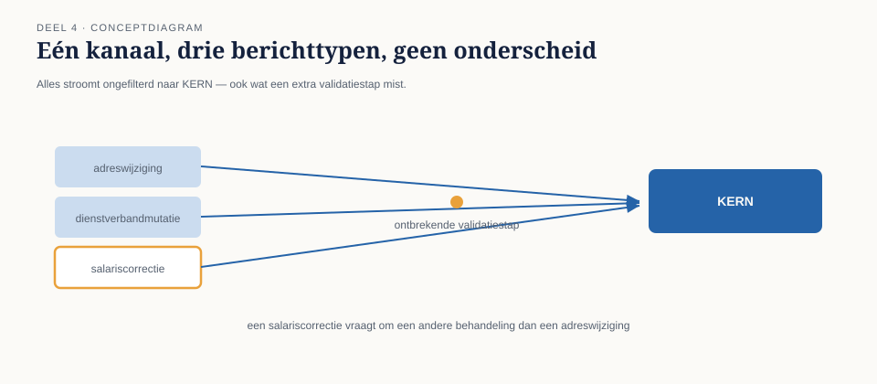
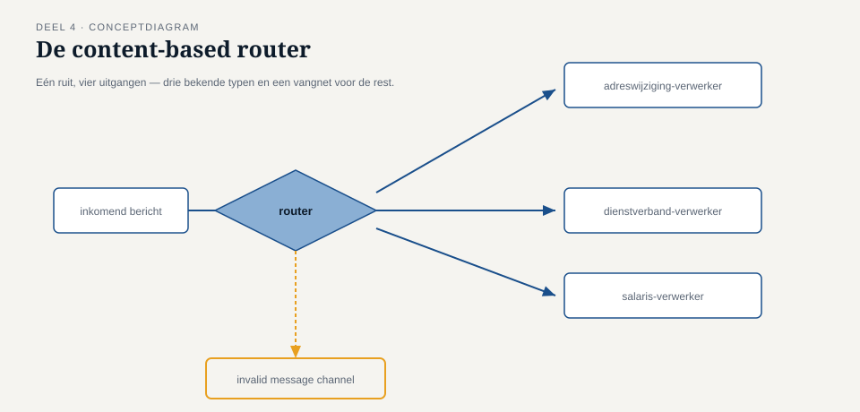
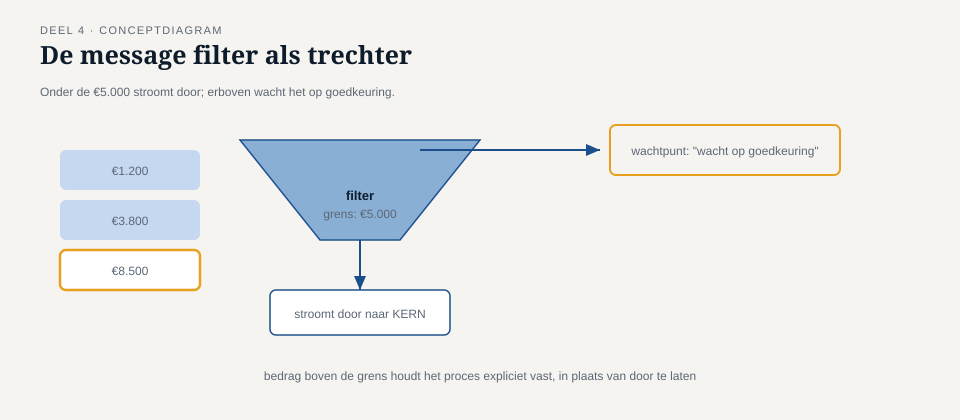

Deel 4 — Basisrouting: content-based router en message filter
Reader · Ductus-cursus Enterprise Integration Patterns · niveau 1 (fundament) · deel 4 van 10
4.0 Eén kanaal, drie soorten mutaties, één probleem
Het ontwerp uit deel 3 werkte voor de adreswijziging waarmee Caspar was begonnen. Twee weken later kwam de eerste uitbreiding: naast adreswijzigingen moest het mutatiekanaal ook dienstverbandmutaties en salariscorrecties dragen. Alle drie zijn command messages, allemaal bestemd voor KERN — dus volgens de regel uit deel 2 ("een kanaal draagt precies één soort bericht") leek dit in eerste instantie geen probleem: het zijn immers allemaal "mutaties".
De eerste productie-week na de uitbreiding bewees het tegendeel. Salariscorrecties moesten, in tegenstelling tot de andere twee, eerst langs een extra validatiestap bij de financiële administratie voordat KERN ze mocht verwerken — een wettelijke eis die niet gold voor adreswijzigingen of dienstverbandmutaties. KERN begon salariscorrecties zonder die validatie te verwerken, wat drie keer tot een foutieve uitbetaling leidde voordat het werd opgemerkt.
Het onderliggende probleem: "mutatie" bleek geen fijnmazig genoeg categorie te zijn. Binnen wat op het eerste gezicht één berichtsoort leek, school een verschil dat om een andere behandeling vroeg. Dit deel behandelt de twee eenvoudigste patronen om daarmee om te gaan: de content-based router, die een bericht op basis van zijn inhoud naar het juiste vervolgpad stuurt, en de message filter, die bepaalt welke berichten een kanaal überhaupt mogen bereiken.

4.1 Twee manieren om een verschil te maken tussen berichten
Er zijn, ruwweg, twee manieren om ervoor te zorgen dat verschillende soorten berichten een verschillend vervolgpad krijgen, en het is belangrijk ze niet door elkaar te gebruiken:
Aparte kanalen per soort. De striktste oplossing: in plaats van één mutatiekanaal, drie kanalen (adreswijzigingen, dienstverbandmutaties, salariscorrecties), elk met een eigen contract en eigen ontvangers. Dit is meestal de voorkeursoplossing wanneer het onderscheid structureel is en blijvend — zoals hier het geval is, want de wettelijke validatie-eis voor salariscorrecties verdwijnt niet.
Eén kanaal met een router ervoor. Als het onderscheid te fijnmazig is om voor elke variant een apart kanaal te rechtvaardigen, of als de indeling nog kan veranderen, is een router die op inhoud beslist een pragmatischer keuze. De router zelf ontvangt van één binnenkomend kanaal, en verdeelt vervolgens naar meerdere uitgaande kanalen.
Bij Meridiaan is uiteindelijk voor de eerste oplossing gekozen — drie kanalen — juist omdat het verschil wettelijk verankerd en niet incidenteel is. Maar de router bleek toch nodig, alleen op een andere plek: bij de binnenkomst vanuit het Werkgeversportaal weet de gebruikersinterface zelf al welk type mutatie het is, dus daar is geen router nodig. Wél bleek een router nodig te zijn tussen het bestaande, oudere Mutatieplatform-voorloper systeem en de nieuwe drie kanalen, omdat dat oudere systeem zelf geen onderscheid maakte en alles op één uitgaand kanaal plaatste. Dat is precies de situatie waarin een content-based router zijn waarde bewijst: niet als vervanging voor goed kanaalontwerp, maar als noodzakelijke schakel tussen een systeem dat het onderscheid niet kent en kanalen die het wel vereisen.
Kernzin 4 van de cursus: routeer op basis van wat het bericht ís, niet op basis van waar het toevallig vandaan komt — anders verplaats je het probleem alleen naar de router.
4.2 De content-based router
Een content-based router ontvangt berichten van één inkomend kanaal en stuurt elk bericht, op basis van de inhoud (doorgaans een header-veld, zoals bepleit in deel 2), naar één van meerdere uitgaande kanalen.
Drie ontwerpregels maken het verschil tussen een router die houdbaar is en een router die binnen een jaar een onderhoudslast wordt:
Routeer op header-velden, niet op de volledige payload. Als de router de payload moet parsen om te beslissen, is hij gedwongen elk berichtformaat te kennen dat langskomt — precies de koppeling die deel 2 wilde vermijden. Bij Meridiaan is daarom een header-veld mutatietype geïntroduceerd, expliciet bedoeld voor routeringsbeslissingen, los van de inhoudelijke velden in de payload.
Houd de routeringslogica declaratief, niet imperatief. Een router die uit een lange keten van if/else-statements bestaat, verbergt zijn eigen regels. Een tabel of configuratie ("mutatietype = salariscorrectie → salariscorrectiekanaal") is transparanter, makkelijker te auditen, en makkelijker uit te breiden zonder de router zelf te herbouwen.
Behandel een onbekend type expliciet, nooit stilzwijgend. Wat gebeurt er als een vierde mutatietype verschijnt dat de router niet kent? Het slechtste antwoord is: negeren, of naar een willekeurig kanaal doorsturen. Het juiste antwoord: naar een apart invalid message channel (uitgewerkt in deel 9), zodat het bericht zichtbaar blijft in plaats van stilletjes te verdwijnen of, erger, verkeerd te worden behandeld.

Dit laatste punt is precies waar het incident bij Meridiaan ontstond, in omgekeerde vorm: er was helemaal geen router — alles ging klakkeloos naar hetzelfde eindpunt, wat feitelijk hetzelfde effect heeft als een router die alle onbekende (of, hier: alle) typen naar hetzelfde kanaal stuurt zonder onderscheid.
4.3 De message filter
Waar een router kiest tússen meerdere uitgaande kanalen, beslist een message filter of een bericht een kanaal überhaupt mag betreden. Een filter heeft precies twee uitkomsten: doorlaten, of niet — er is geen derde uitgaand kanaal zoals bij de router.
Het onderscheid met een router is belangrijker dan het lijkt, en wordt in de praktijk vaak door elkaar gehaald. Een filter test bijvoorbeeld: "is dit een salariscorrectie boven de €5.000, die om die reden een extra handmatige goedkeuring vereist voordat hij het reguliere validatiekanaal mag betreden?" Ontvangt de filter een bericht dat niet aan die voorwaarde voldoet, dan gaat het simpelweg niet door — niet naar een alternatief kanaal, tenzij je de filter expliciet zo ontwerpt (in welk geval hij feitelijk een tweewegs-router wordt, en dat woord ook zou moeten heten).
Wanneer een filter, wanneer een router? Gebruik een filter wanneer de vraag is "hoort dit bericht hier wel of niet thuis" — een ja/nee-beslissing met precies één geldig vervolgpad bij "ja". Gebruik een router wanneer de vraag is "welke van meerdere geldige vervolgpaden hoort hierbij" — elke uitkomst is een legitieme bestemming, er is geen "afkeuring".
Bij Meridiaan is een filter toegevoegd vóór het salariscorrectiekanaal: correcties onder €5.000 gaan direct door naar de reguliere validatie, correcties van €5.000 of meer worden tegengehouden en pas doorgelaten nadat een handmatige goedkeuring is geregistreerd (een apart mechanisme, geen onderdeel van dit deel). De filter zelf beslist niets inhoudelijks over de mutatie — hij beslist alleen of het bericht op dit moment het kanaal mag betreden.

4.4 Router en filter samen: de volgorde doet ertoe
Het incident van 4.0 en de oplossing eromheen laten zien dat router en filter vaak samen worden ingezet, en dat de volgorde waarin ze staan het gedrag bepaalt.
Bij Meridiaan is de uiteindelijke keten: content-based router (verdeelt naar adreswijziging-, dienstverband- of salariscorrectiekanaal) → op het salariscorrectiekanaal specifiek een message filter (houdt bedragen boven €5.000 tegen tot goedkeuring). De router beslist eerst wat voor soort bericht dit is; de filter beslist daarna, alleen voor het salariscorrectiepad, of dit specifieke bericht op dit moment door mag.
Zou de volgorde omgekeerd zijn — eerst filteren, dan routeren — dan zou de filter voorafgaand aan de routering al moeten weten dat het om een salariscorrectie gaat, wat betekent dat de filter zelf inhoudelijke kennis over berichttypen zou moeten bevatten. Dat maakt de filter minder herbruikbaar en vermengt twee verantwoordelijkheden (categoriseren en toelaten) die beter gescheiden blijven.
Vuistregel: routeer eerst naar het juiste pad, filter daarna binnen dat pad. Dit houdt elke component verantwoordelijk voor precies één beslissing.
Samenvatting van deel 4
- Wanneer een verschil tussen berichten structureel en blijvend is, is een apart kanaal per soort vaak de voorkeursoplossing; een router is nodig waar systemen dat onderscheid zelf niet kunnen maken.
- Een content-based router verdeelt van één inkomend kanaal naar meerdere uitgaande kanalen op basis van inhoud — bij voorkeur op header-velden, declaratief, met expliciete afhandeling van onbekende typen.
- Een message filter heeft twee uitkomsten: doorlaten of niet. Hij beslist niet tússen meerdere geldige vervolgpaden, zoals een router dat doet.
- De vuistregel: routeer eerst naar het juiste pad, filter daarna binnen dat pad — dat houdt elke component verantwoordelijk voor precies één beslissing.
Vooruitblik
Deel 5 gaat over transformatie: zodra berichten via de juiste paden bij de juiste ontvangers aankomen, blijkt vaak dat die ontvangers niet allemaal hetzelfde formaat verwachten. De translator, de envelope wrapper en de normalizer lossen dat op — zonder dat elke zender elk ontvangerformaat hoeft te kennen.